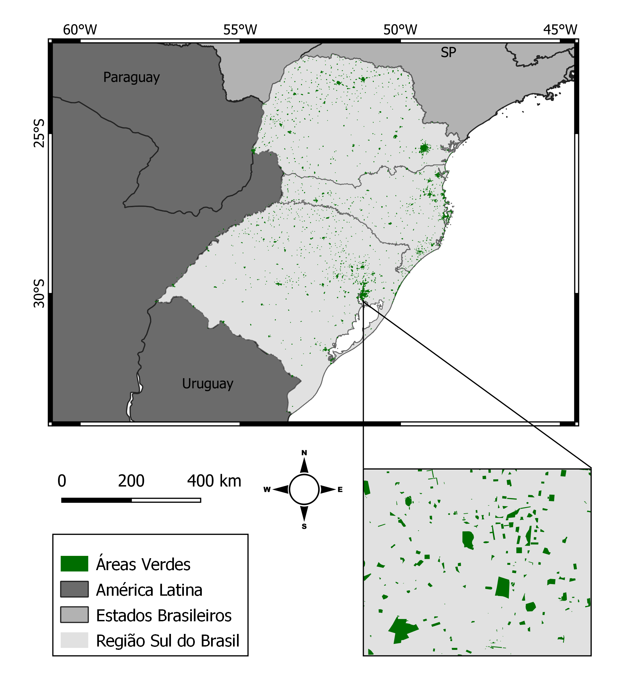

De autoria de Felipe Marzani da Silva
Meu nome é Felipe Marzani da Silva, tenho 22 anos e sou Técnico em Geoprocessamento formado pelo Instituto Federal de Educação, Ciência e Tecnologia do Rio Grande do Sul. Me formei no ano de 2022, sendo a Análise da Distribuição de Parques e Áreas Verdes e a COVID-19 nos Municípios do Sul do Brasil o meu trabalho de conclusão de curso.
Estarei realizando um resumo do meu TCC com HTML com objetivo de treinar e de aos poucos me inserir dentro do mundo da programação.
Tendo em vista o surgimento do novo coronavírus no final do ano de 2019, a ciência desenvolveu estudos a cerca da COVID-19, seja em questões de letalidade quanto de contaminação. Partindo disso, adotou-se medidas de mitigação como o uso de máscaras e o afastamento social, por exemplo. A transmissão da COVID se dá muito por vias de contato próximo, principalmente por gotículas respiratórias, sendo que em espaços fechados, devido a baixa circulação de ar, as chances de contaminação se intensificam (BRASIL, 2021).
Assim, tendo em vista a consideração de que espaços fechados são mais propensos a infecção do que locais abertos, este estudo visa investigar se a presença e quantidade de áreas verdes, como parques e campos abertos de uso recreativo tanto público quanto privados, gerou impacto nos registros de casos de COVID-19. Para isso, utilizou-se a correlação de spearman para determinar se houve ou não correlação entre a quantidade de áreas verdes e a COVID-19.
Em primeira análise para este estudo, obtiveram-se todos os dados necessários. Utilizou-se de de um repositório no GitHub para adquirir os dados da COVID-19, o IBGE para adquirir as malhas municipais e estaduais, além do OpenStreetMap para a obtenção dos arquivos espaciais das áreas verdes. Para toda a manipulação dos dados se utilizou do software QGIS e linguagem de programação R. Filtrou-se todos os arquivos e realizou-se junções espaciais para se adquirir um arquivo com todas as camadas necessárias. Abaixo deixo um mapa de própria autoria para exemplificar como que ficou a distribuição de áreas verdes.
Por fim, realizou-se os cálculos de área verde por habitante e percentual de cobertura de áreas verdes com os quais se comparou com a taxa de casos de COVID-19 por 100 mil habitantes em um coeficiente de correlação de spearman.
Através da correlação de Spearman, realizada na linguagem R, obteve-se uma ausência de correlação entre as variáveis estudadas, sendo que a hipótese do estudo era de que quanto maior a quantidade de áreas verdes, menores seriam as taxas de COVID-19 por 100 mil habitantes. Além disso, verificou-se que a quantidade de casos de COVID-19 estava demonstrando uma correlação positiva com a quantidade bruta de áreas verdes. Isto pode ser verificado, pois tanto os casos de COVID-19, quanto de quantidade de áreas verdes, apresentaram correlação positiva com a quantidade de população, assim demonstrando que nos locais que haviam maiores casos de COVID-19, além de serem os de maior população, apresentava tendencia de também apresentar maior quantidade de áreas verdes.